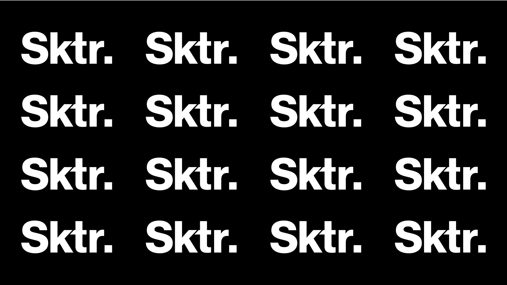
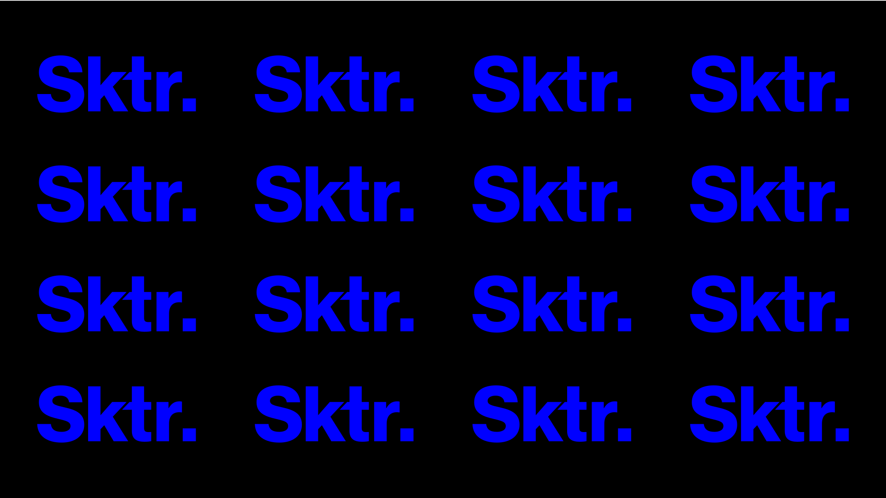
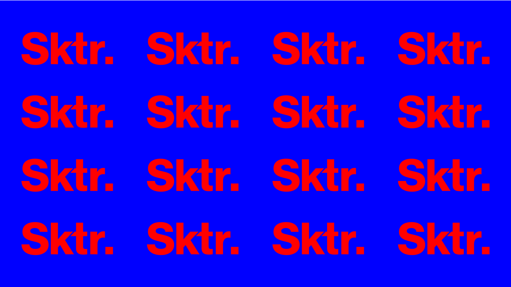
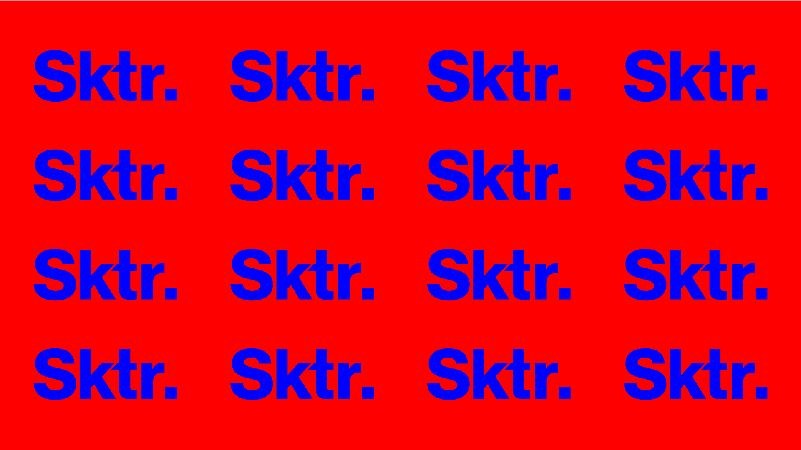

001 / Origen
Sektor es un espacio creado para darle a la musica el lugar que merece. Un punto de encuentro donde el sonido construye la experiencia de la noche.
Nos inspiramos en la estética del rave underground de los '90 y los '00: espacios sin ornamentos, sin poses, donde lo único que importaba era el sonido y los cuerpos que respondían a él.



